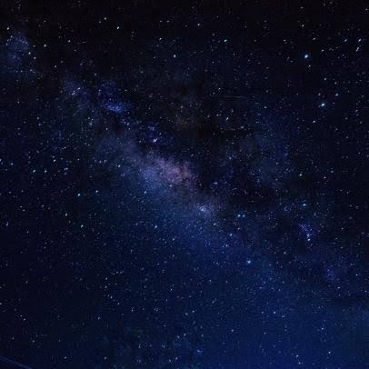

Exoplanet Detecting Methods
Data-driven analysis and research on exoplanet detection methodologies, focusing on photometric transit and light curve observation techniques using astronomical datasets.
Status: Research & Analysis Completed

I am a passionate Data Scientist Trainee with a strong interest in AI and Astronomical Data Science. With a background spanning Management Information Systems, Computer Programming, and Sociology, I combine analytical thinking with practical coding skills to build data-driven solutions.
A summary of research topics, data pipelines, and machine learning models I have worked on.
Data-driven analysis and research on exoplanet detection methodologies, focusing on photometric transit and light curve observation techniques using astronomical datasets.
Status: Research & Analysis Completed
End-to-end predictive modeling using Python. Developed data preprocessing, feature engineering, and classification algorithms on structured datasets.
Status: Applied Project (Bootcamp)
Building Convolutional Neural Networks (CNN) for image recognition and pattern extraction in scientific and real-world datasets.
Status: Model Trained & Evaluated
Natural Language Processing pipeline built for text preprocessing, sentiment analysis, and automated document categorization.
Status: Completed